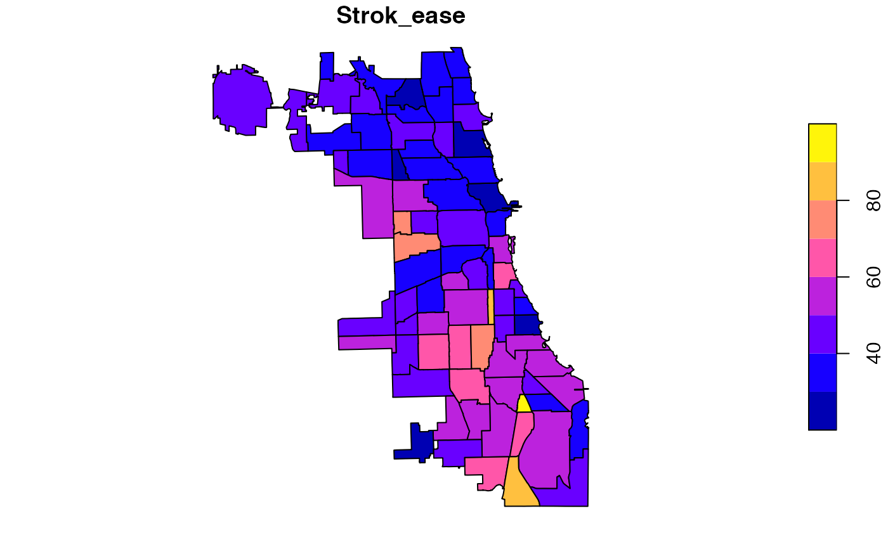

Health indicators for Chicago neighorhoods.
chihealth
An sf data frame with 77 rows, 32 variables, and a geometry column:
Births per 1,000 residents
General fertility rate per 1,000 females 15-44
Percent of live births with low birth weight
Percent of live births who had prenatal care beginning in first trimester
Preterm births as percent of live births
Teen birth rate per 1,000 females age 15-19
Assault(homicide) per 100,000 people, age adjusted.
Breast cancer deaths per 100,000 females, age adjusted.
Cancer deaths per 100,000 people, age adjusted.
Colorectal cancer deaths per 100,000 people, age adjusted.
Diabetes-related deaths per 100,000 people, age adjusted.
Firearm related deaths per 1000,000 people, age adjusted.
Infant mortality rate per 1,000 live births
Lung cancer deaths per 100,000 people, age adjusted.
Prostate cancer deaths per 100,000 males, age adjusted.
Stroke deaths per 100,000 people, age adjusted.
Childhood blood lead level screening per 1,000 children age 0-6 years
Childhood lead poisoning per 100
Gonorrhea in females, per 100,000 females age 15-44
Gonorrhea in females, per 100,000 females age 15-44
Tuberculosis per 100,000 people
Percent of households below poverty level
Percent of occupied housing units
Percent of persons aged less than 16 or more than 64 years
Percent of persons age 25 or higher without high school diploma
Percapita income, 2011 adjusted dollars
Unemployment as a percent of persons aged 16 or older
City of Chicago Data Portal (https://data.cityofchicago.org/Health-Human-Services/Public-Health-Statistics-Selected-public-health-in/iqnk-2tcu) Data provided by Illinois Department of Public Health (IDPH) and U.S. Census Bureau.
Sf object, unprojected. EPSG 4326: WGS84.
if (requireNamespace("sf", quietly = TRUE)) { library(sf) data(chihealth) plot(chihealth["Strok_ease"]) }